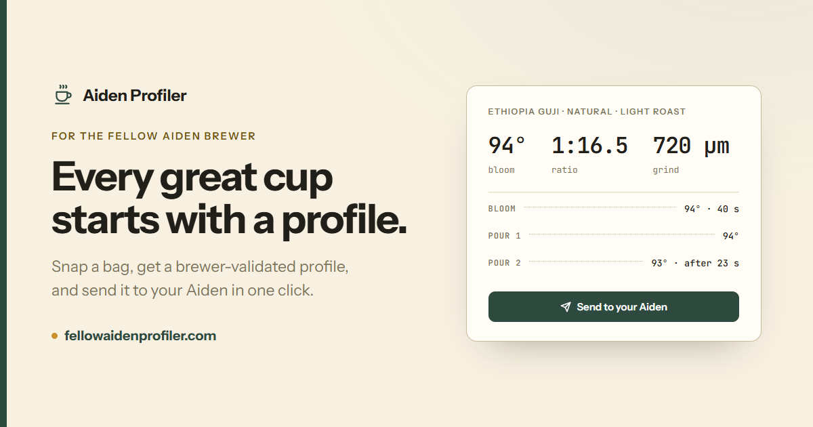

Fellow Aiden Profiler
Find, create and import brew profiles for the Fellow Aiden, and share them in a communal catalog.
A Blazor frontend and a backend built on the FellowAiden .NET client, orchestrated
with .NET Aspire and deployed to Azure.

typer
A fast, monkeytype-style typing test for the terminal. Time and words modes, English and Danish
word lists, and a stats screen that charts your wpm over time. Installs as a global .NET tool.

wod-gpt
An AI-powered CrossFit workout generator that creates custom workouts based on your preferences.
fellow-aiden-ts
A TypeScript/JavaScript client for the Fellow Aiden coffee brewer's cloud API, published to npm,
with a browser demo running through a Cloudflare Worker proxy.
fellow-aiden-dotnet
The same Fellow Aiden client for .NET, published to NuGet as FellowAiden.